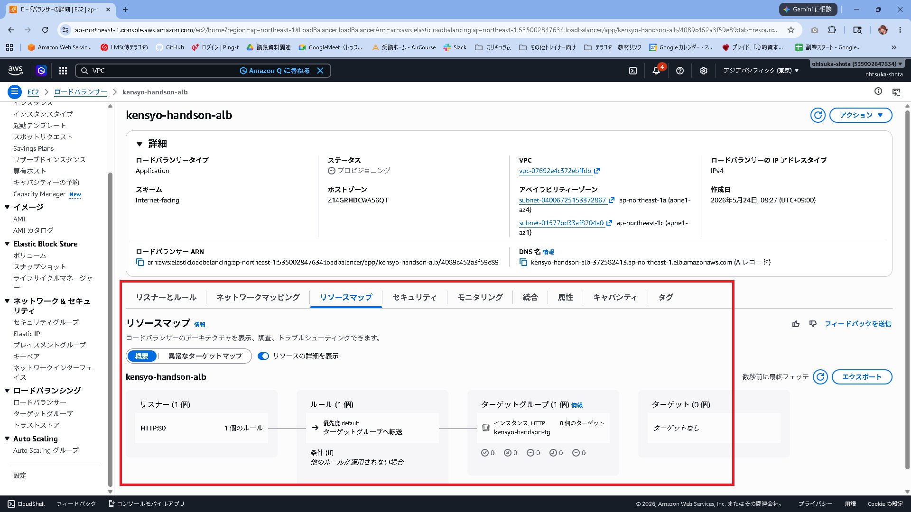
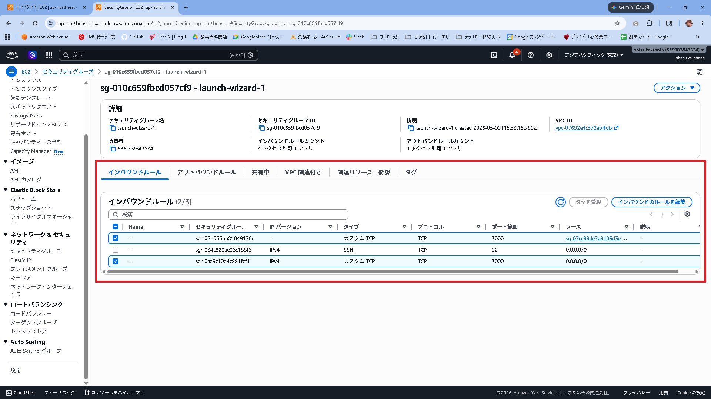
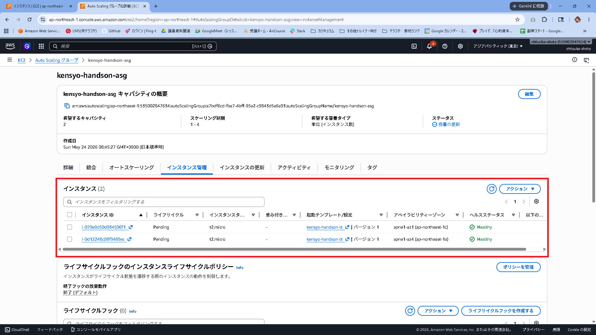
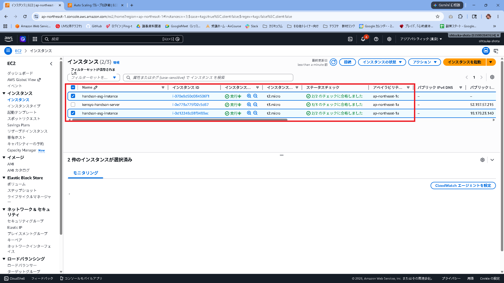
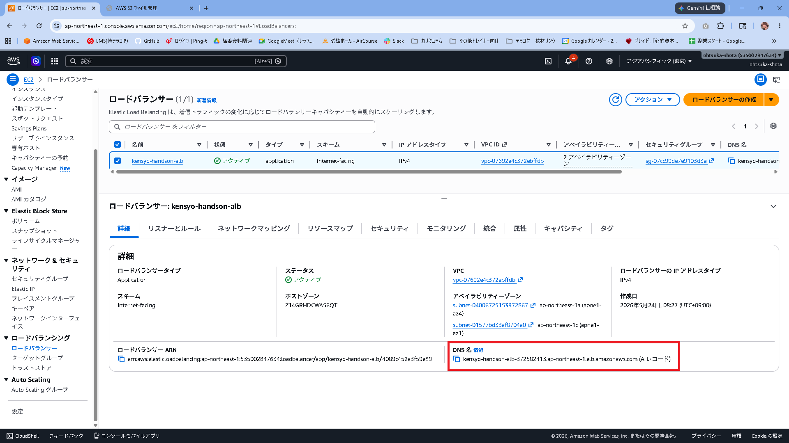
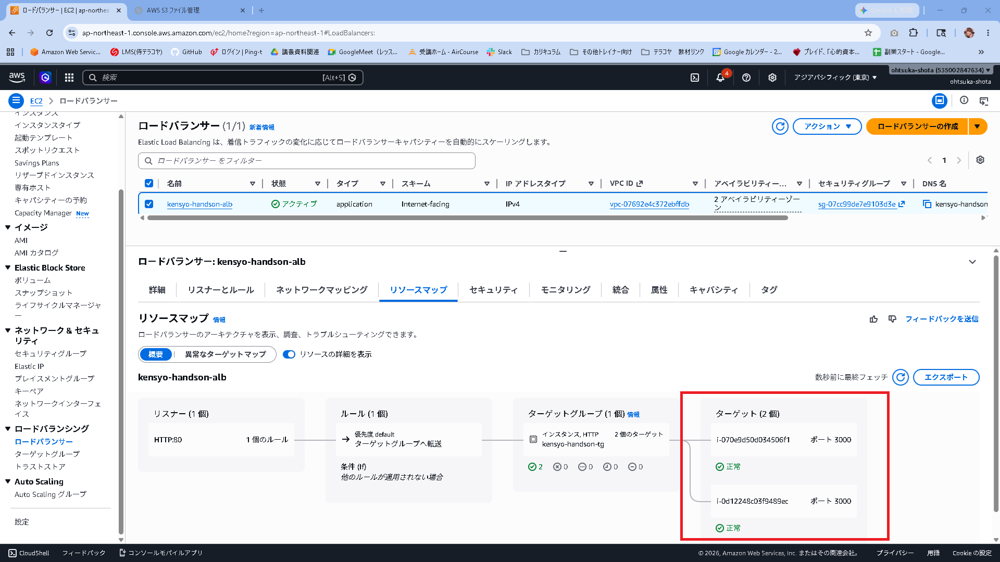
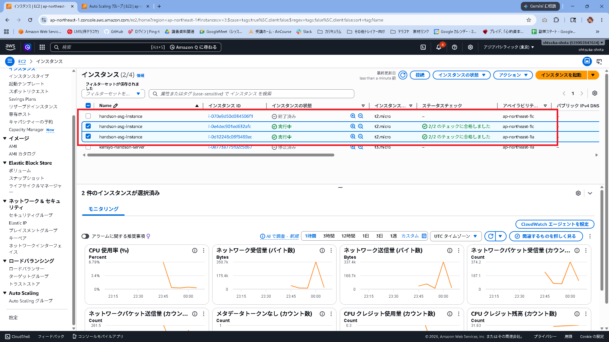
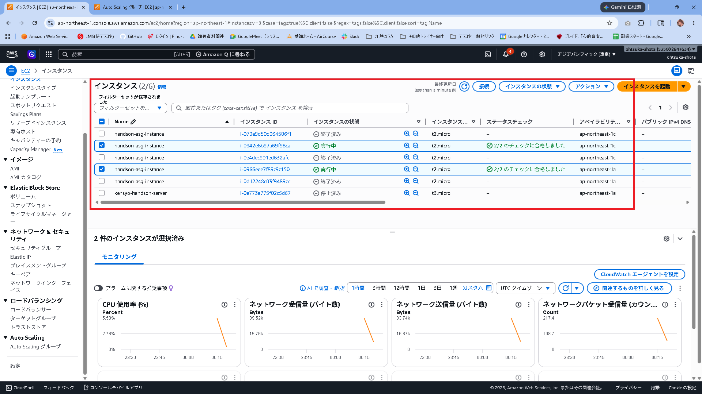
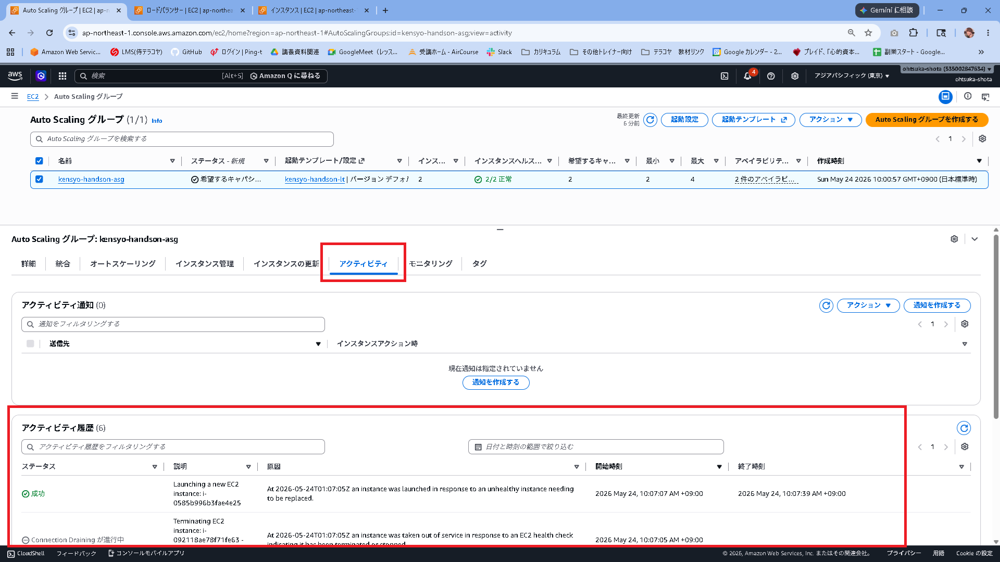

ALB + Auto Scaling セットアップ手順（Phase 6 ハンズオン）¶
作成日: 2026-05-23
対象: AWS未経験者向けハンズオン（6回目）
完成後イメージ¶
[ブラウザ]
↓ http://[ALBのDNS名]（ポート80）
[ALB: handson-alb]
├─→ EC2 (ap-northeast-1a) ← AMI から自動起動
└─→ EC2 (ap-northeast-1c) ← AMI から自動起動
↓
[DynamoDB / S3 / Cognito / Bedrock]（Phase 5 から変更なし）
環境イメージ¶
graph TB
User["👤 ユーザー\n（ブラウザ）"]
subgraph AWS["AWS クラウド (ap-northeast-1)"]
IGW["🌐 インターネットゲートウェイ\nhandson-igw"]
Cognito["🔐 Amazon Cognito\nhandson-user-pool"]
IAM["IAMロール\nhandson-ec2-role"]
subgraph VPC["VPC: handson-vpc (10.0.0.0/16)"]
ALB["⚖️ ALB: handson-alb\nポート 80 で受信 → 3000 に転送"]
subgraph SubnetA["パブリックサブネット: handson-public-subnet-1a\n10.0.0.0/24 / ap-northeast-1a"]
EC2A["EC2インスタンス\n(AMIから自動起動)\nPM2 でアプリ起動\nポート 3000"]
end
subgraph SubnetC["パブリックサブネット: handson-public-subnet-1c\n10.0.1.0/24 / ap-northeast-1c"]
EC2C["EC2インスタンス\n(AMIから自動起動)\nPM2 でアプリ起動\nポート 3000"]
end
ALB -->|"振り分け"| EC2A
ALB -->|"振り分け"| EC2C
end
S3["🪣 S3 バケット\nhandson-[名前]-files"]
DDB["🗄️ DynamoDB\nhandson-reviews"]
subgraph Virginia["us-east-1"]
Bedrock["🤖 Amazon Bedrock\namazon.nova-micro-v1:0"]
end
IAM -.->|アタッチ| EC2A
IAM -.->|アタッチ| EC2C
EC2A -->|"AWS SDK"| S3
EC2A -->|"AWS SDK"| DDB
EC2A -->|"ConverseCommand"| Bedrock
EC2A -->|"JWKS で JWT 検証"| Cognito
EC2C -->|"AWS SDK"| S3
EC2C -->|"AWS SDK"| DDB
EC2C -->|"ConverseCommand"| Bedrock
EC2C -->|"JWKS で JWT 検証"| Cognito
end
User -->|"HTTP ポート80"| IGW
IGW --> ALBゴール¶
Phase 5 まで「1台のEC2」で動かしていたアプリを、複数のEC2で同時に動かす構成に変える。 1台が突然止まっても残りのEC2でアプリが動き続けられるようにすること、これを冗長化という。 ALBがアクセスを振り分け、Auto Scalingが負荷に応じてEC2台数を自動で増減させる構成を体験する。
全体の流れ¶
[1] サブネットを追加作成（AZ-c 用）
↓
[2] EC2 に PM2 をインストールして自動起動設定
↓
[3] AMI（マシンイメージ）を作成
↓
[4] ターゲットグループを作成
↓
[5] ALB（Application Load Balancer）を作成
↓
[6] Launch Template を作成
↓
[7] Auto Scaling グループを作成
↓
[8] ブラウザで動作確認
↓
[9] （後片付け）リソースの削除
AWS 用語集（手順を始める前に読んでおこう）¶
今回のテーマ：なぜ1台では危ないのか¶
Phase 1〜5 では EC2 が1台しかいない。このEC2が突然止まると、アプリ全体がダウンする。
【現状】
ブラウザ → EC2（1台）→ DynamoDB / S3
↑ここが止まると全滅
【Phase 6 以降】
ブラウザ → ALB → EC2-A（AZ-a）→ DynamoDB / S3
→ EC2-C（AZ-c）→ DynamoDB / S3
↑1台止まっても ALB が別の EC2 にアクセスを振り分ける
アベイラビリティゾーン（AZ）¶
AWS のリージョン（例: 東京）の中にある、物理的に別の場所にあるデータセンターのグループ。
東京リージョンには ap-northeast-1a・1c・1d の3つの AZ がある。
東京リージョン (ap-northeast-1)
├─ AZ-a (ap-northeast-1a) ← 建物A（例: 江東区）
├─ AZ-c (ap-northeast-1c) ← 建物C（例: 港区）
└─ AZ-d (ap-northeast-1d) ← 建物D（例: 新宿区）
建物の場所が違うので、AZ-a で火災・停電が起きても AZ-c のEC2は動き続ける。 今回は AZ-a と AZ-c の2つにEC2を1台ずつ置くことで、片方が停止しても動き続けられる構成にする。
サブネット（Subnet）¶
VPC 内を分割した小さなネットワーク。AZ ごとに1つ作成する。 今回は AZ-a 用と AZ-c 用の2つを用意する。
| サブネット名 | CIDR | AZ | 役割 |
|---|---|---|---|
| handson-public-subnet-1a | 10.0.0.0/24 | ap-northeast-1a | Phase 1 で作成済み |
| handson-public-subnet-1c | 10.0.1.0/24 | ap-northeast-1c | Phase 6 で新規作成 |
CIDRの番号が違う理由: 1つのサブネットに割り当てるIPアドレスの範囲は、別のサブネットと重複できない。
10.0.0.0/24は「10.0.0.1〜10.0.0.254」の範囲、10.0.1.0/24は「10.0.1.1〜10.0.1.254」の範囲なので、 番号を1つずらすことで重複しない2つの範囲を確保している。
ルートテーブル（Phase 1 の復習）¶
「このIPアドレス宛の通信はどこへ送るか」を定義した経路表。
Phase 1 で 0.0.0.0/0 → インターネットゲートウェイ（= すべての宛先はインターネットへ）というルールを作成した。
新しいサブネットを作成しただけでは、このルートテーブルとの関連付けが行われていない。 関連付けがないと「インターネットに出るにはどこへ行けばよいか」が分からず、外部と通信できない。 手順 [1-4] でこの関連付けを行う。
handson-public-subnet-1c（新しいサブネット）
↓ ルートテーブルを関連付け
handson-rtb（0.0.0.0/0 → handson-igw）
↓ これでインターネットに出られるようになる
インターネット
AMI（Amazon Machine Image）¶
EC2インスタンスの「スナップショット（写真）」。 OS・インストール済みソフト・設定ファイルがそのまま保存される。 AMIから新しいEC2を起動すると、スナップショット時点の状態で立ち上がる。
ポート¶
1台のサーバー（EC2）は複数のアプリを同時に動かせる。 どのアプリ宛の通信かを区別するための「窓口番号」がポートである。
今回は2種類のポートが登場する：
| ポート番号 | 役割 |
|---|---|
| 80 | ALB がブラウザからアクセスを受け付ける窓口。HTTP の標準ポートなのでURLにポート番号を書かずに済む |
| 3000 | EC2 上のアプリが動いている窓口。ALB から転送されたアクセスはここで受け取る |
ブラウザからは「ポート80のALB」にアクセスするだけでよく、3000番を意識しなくてよい。
ALB（Application Load Balancer）¶
複数のEC2にアクセスを振り分ける「交通整理役」。 ブラウザからのアクセスを受け取り、正常に動いているEC2に順番に振り分ける。
- ヘルスチェック: 数十秒ごとに各EC2の
/（トップページ）へアクセスし、正常に応答するか確認する。応答がないEC2には振り分けを停止する。 - ラウンドロビン: 複数のEC2に対して1台ずつ順番に振り分ける方式。EC2-A・EC2-C・EC2-A・EC2-C…と交互に割り振られる。
- マルチAZ対応: 複数の AZ にまたがって配置できるため、1つの AZ が停止しても別の AZ のEC2でアプリが動き続ける。
ターゲットグループ¶
ALBが「どのEC2に振り分けるか」を管理するグループ。 ALBに直接EC2を登録するのではなく、一度ターゲットグループにEC2を登録し、ALBはターゲットグループを宛先として指定する。
ALB → ターゲットグループ（handson-tg）
├─ EC2-A（healthy: 正常）← ここに振り分ける
└─ EC2-C（healthy: 正常）← ここにも振り分ける
（unhealthy になったら自動で外す）
こうすることで、Auto Scaling が EC2 を追加・削除しても、ALB 側の設定を変えずに柔軟に対応できる。
Auto Scaling グループ（ASG）¶
EC2の台数を自動で増減させる仕組み。
| 設定 | 意味 |
|---|---|
| 最小台数（Min） | 常に動かし続ける最低台数 |
| 希望台数（Desired） | 通常時の台数 |
| 最大台数（Max） | 増やせる上限台数 |
アクセスが増えて負荷が高くなると台数を自動で増やし（スケールアウト）、アクセスが減って負荷が下がると台数を自動で減らす（スケールイン）。
【スケールアウト：負荷が増えたとき】
EC2 × 2台 → EC2 × 3台 → EC2 × 4台
【スケールイン：負荷が落ち着いたとき】
EC2 × 4台 → EC2 × 3台 → EC2 × 2台
Launch Template（起動テンプレート）¶
ASGが新しいEC2を起動するときの「設計図」。 AMI・インスタンスタイプ・セキュリティグループ・IAMロールなどをあらかじめ登録しておく。
PM2¶
起動したアプリを管理・監視するソフト。
通常 npm start でアプリを起動すると、ターミナルを閉じたときやサーバーが再起動したときにアプリも止まってしまう。
PM2 を使うと、以下のことが自動で行われる：
- EC2 起動時にアプリを自動で起動する（ターミナルを開かなくてよい）
- アプリが異常終了したとき自動で再起動する
AMI から起動した EC2 でもアプリが自動起動するよう、AMI 作成前に PM2 の設定を行う。
[1] サブネットを追加作成（AZ-c 用）¶
Phase 1 では AZ-a（ap-northeast-1a）にサブネットを1つ作成した。 ALB はマルチAZ構成が必須なので、AZ-c（ap-northeast-1c）用のサブネットを追加する。
1-1. VPC コンソールを開く¶
- AWSマネジメントコンソール → 「VPC」を開く
- リージョンが 東京（ap-northeast-1） になっていることを確認
1-2. 既存サブネットの確認¶
- 左メニュー「サブネット」→
handson-public-subnetを確認 - 「アベイラビリティゾーン」が
ap-northeast-1a、CIDR が10.0.0.0/24であることを確認
名前の変更（任意）: 混乱を避けるために
handson-public-subnetをhandson-public-subnet-1aに変更しておくと分かりやすい。 サブネット名を選択 → 鉛筆アイコン → 名前を変更 → 保存
1-3. 新しいサブネットを作成（AZ-c 用）¶
- 「サブネットを作成」をクリック
- 以下を設定:
| 項目 | 値 |
|---|---|
| VPC ID | handson-vpc を選択 |
| サブネット名 | handson-public-subnet-1c |
| アベイラビリティゾーン | ap-northeast-1c |
| IPv4 CIDR ブロック | 10.0.1.0/24 |
- 「サブネットを作成」をクリック
1-3-2. パブリックIP自動割り当てを有効化する¶
サブネット作成直後はパブリックIPの自動割り当てが無効になっている。このままだとEC2にパブリックIPが付かず、インターネットに出られないためCognitoへのJWT検証が失敗して401エラーになる。
- 作成した
handson-public-subnet-1cを選択 - 「アクション」→ 「サブネットの設定を編集」
- 「パブリックIPv4アドレスの自動割り当てを有効化」 にチェック → 保存
なぜ必要か: このアプリはJWT検証のためにEC2から外部のCognitoエンドポイント（
cognito-idp.ap-northeast-1.amazonaws.com）にHTTPS通信を行う。 パブリックIPがないとインターネットに出られず、JWT検証が失敗して全APIが401になる。 S3・DynamoDB・Bedrockへの通信も同様に失敗する。
1-4. 新しいサブネットをルートテーブルに関連付ける¶
新しいサブネットにもインターネットゲートウェイへのルートが必要。
- 左メニュー「ルートテーブル」→
handson-rtb（またはhandson-public-subnetに関連付けられているルートテーブル）を選択 - 「サブネットの関連付け」タブ → 「サブネットの関連付けを編集」
handson-public-subnet-1cにチェックを追加 → 「保存」
確認: ルートテーブルに
0.0.0.0/0 → handson-igwのルートがあることを確認する。 これがないと、新しいサブネットからインターネットに出られない。
[2] EC2 に PM2 をインストールして自動起動設定¶
AMI を作成する前に、EC2 起動時にアプリが自動で立ち上がるよう設定する。
2-1. EC2 に SSH 接続¶
2-2. 現在動いているアプリを停止¶
2-3. PM2 をインストール¶
2-4. アプリを PM2 で起動¶
起動確認:
2-5. PM2 の自動起動設定（EC2 再起動時も自動起動）¶
① systemd への自動起動登録を行う
② 現在の PM2 プロセス状態を保存する（次回 EC2 起動時に自動復元される）
2-6. ブラウザで動作確認¶
ログインできてアプリが正常に動いていれば OK。
[3] AMI（マシンイメージ）を作成¶
現在の EC2 の状態をスナップショットとして保存する。
- AWSマネジメントコンソール → 「EC2」を開く
- 左メニュー「インスタンス」→ 動作中の EC2 インスタンスを選択
- 「アクション」→「イメージとテンプレート」→「イメージを作成」
- 以下を設定:
| 項目 | 値 |
|---|---|
| イメージ名 | handson-app-ami |
| イメージの説明 | end-phase05-after-pm2 |
| 再起動しない | チェックなし（デフォルトのまま） |
| タグ | Name: handson-app-ami |
- 「イメージを作成」をクリック
AMI の作成には数分かかる。 左メニュー「AMI」を開き、ステータスが「available」になるまで待つ。
[4] ターゲットグループを作成¶
ALB がリクエストを送る宛先グループを作る。
- EC2 コンソール → 左メニュー「ターゲットグループ」→「ターゲットグループの作成」
- 以下を設定:
| 項目 | 値 |
|---|---|
| ターゲットタイプ | インスタンス |
| ターゲットグループ名 | handson-tg |
| プロトコル | HTTP |
| ポート | 3000 |
| VPC | handson-vpc |
| ヘルスチェックパス | / |
| ヘルスチェック正常のしきい値 | 2 |
| ヘルスチェック間隔 | 30秒 |
- 「次へ」→「ターゲットグループの作成」（この時点でEC2は登録しない）
ポートを 3000 にする理由: アプリは 3000 番ポートで動いている。ALB はポート 80 でリクエストを受け取り、3000 番に転送する。
[5] ALB（Application Load Balancer）を作成¶
5-1. ALB を作成¶
- EC2 コンソール → 「ロードバランサー」→「ロードバランサーの作成」
- 「Application Load Balancer」を選択 → 「作成」
- 以下を設定:
基本設定
| 項目 | 値 |
|---|---|
| 名前 | handson-alb |
| スキーム | インターネット向け |
| IP アドレスタイプ | IPv4 |
ネットワークマッピング
| 項目 | 値 |
|---|---|
| VPC | handson-vpc |
| アベイラビリティゾーン（1つ目） | ap-northeast-1a → handson-public-subnet-1a を選択 |
| アベイラビリティゾーン（2つ目） | ap-northeast-1c → handson-public-subnet-1c を選択 |
2つのAZを選ぶ理由: ALB はマルチAZ構成が必須。1つのAZが障害になっても、もう1つのAZで継続できる。
セキュリティグループ
「新しいセキュリティグループを作成」を選択:
| 項目 | 値 |
|---|---|
| 名前 | handson-alb-sg |
| インバウンドルール | HTTP / ポート 80 / ソース: 0.0.0.0/0 |
リスナーとルーティング
| 項目 | 値 |
|---|---|
| プロトコル | HTTP |
| ポート | 80 |
| デフォルトアクション | handson-tg に転送 |
- 「ロードバランサーの作成」をクリック
作成されたALBのリソースマップを押下する。
リスナー → ルール → ターゲットグループ迄線が引かれており、紐づけがされていることを確認する

5-2. EC2 のセキュリティグループに ALB からのアクセスを許可¶
ALB から EC2 の 3000 番ポートへのアクセスを許可する。
- EC2 コンソール → 「セキュリティグループ」
- EC2 に設定されている
handson-sgを選択 - 「インバウンドルールを編集」→「ルールを追加」
| 項目 | 値 |
|---|---|
| タイプ | カスタム TCP |
| ポート範囲 | 3000 |
| ソース | handson-alb-sg（ALBのSGをドロップダウンから選択） |
- 「ルールを保存」
ポートが3000でソースが0.0.0.0/0とsg-*のものの2つがある状態となる。 ALBとEC2を紐づけ出来たら、0.0.0.0/0の方を外してみると勉強になるだろう。 ALB経由→通信〇 EC2直接→通信×

[6] Launch Template を作成¶
Auto Scaling グループが EC2 を起動するときの設計図を作る。
- EC2 コンソール → 「起動テンプレート」→「起動テンプレートを作成」
- 以下を設定:
| 項目 | 値 |
|---|---|
| 起動テンプレート名 | handson-lt |
| AMI | [3] で作成した handson-app-ami を選択 |
| インスタンスタイプ | t2.micro（無料枠対象） |
| キーペア | 既存のキーペアを選択 |
| セキュリティグループ | handson-ec2-sg（既存のEC2と同じもの） |
高度な詳細
| 項目 | 値 |
|---|---|
| IAM インスタンスプロファイル | handson-ec2-role |
IAMロールを指定する理由: AMI から起動した EC2 にも DynamoDB/S3/Bedrock へのアクセス権限が必要。
- 「起動テンプレートを作成」
[7] Auto Scaling グループを作成¶
- EC2 コンソール → 「Auto Scaling グループ」→「Auto Scaling グループを作成」
ステップ 1：起動テンプレートを選択¶
| 項目 | 値 |
|---|---|
| 名前 | handson-asg |
| 起動テンプレート | handson-lt |
ステップ 2：ネットワーク設定¶
| 項目 | 値 |
|---|---|
| VPC | handson-vpc |
| アベイラビリティゾーンとサブネット | handson-public-subnet-1a と handson-public-subnet-1c の両方を選択 |
ステップ 3：ロードバランシング設定¶
| 項目 | 値 |
|---|---|
| ロードバランシング | 既存のロードバランサーにアタッチ |
| ターゲットグループ | handson-tg |
| ヘルスチェックのタイプ | ELB（ALBのヘルスチェックを使う） |
ステップ 4：グループサイズとスケーリング¶
| 設定 | 値 | 意味 |
|---|---|---|
| 希望する容量 | 2 | 通常時 2 台起動 |
| 最小容量 | 2 | スケールインで減らせる下限を 2 台に固定 |
| 最大容量 | 4 | 最大 4 台まで増やせる |
最小容量を 2 にする理由: スケーリングポリシー（CPU監視）を設定すると、トラフィックがない学習環境では CPU 使用率がほぼ 0% になり、「CPU が低すぎる → 台数を減らせ（AlarmLow）」が常に発火してしまう。 最小容量を 2 にすることで、スケールインが発火しても 2 台より減らなくなる。 最小容量を 1 のままにすると、スケーリングポリシーが自動で Desired を 1 に下げ続けるため、2 台維持できない。
スケーリングポリシー（任意）: - 「ターゲット追跡スケーリングポリシー」を選択 - メトリクス: 「平均 CPU 使用率」 - ターゲット値: 50
CPU が 50% を超えたら自動でEC2を追加し、下がったら削除する設定。 学習環境では常に CPU が低いため、最小容量が 1 だとスケールインが繰り返し発火して 1 台に戻され続ける。最小容量 2 で防ぐ。
ステップ 5：タグ設定¶
| キー | 値 |
|---|---|
| Name | handson-asg-instance |
タグを設定しておくと、ASGが起動した EC2 を一覧で識別しやすくなる。
ステップ 6：確認 → 作成¶
「Auto Scaling グループを作成」をクリック。
EC2 が自動起動される。 「インスタンス」の一覧に
handson-asg-instanceという名前のEC2が2台表示されれば成功。


[8] ブラウザで動作確認¶
8-1. ALB の DNS 名を確認¶
- EC2 コンソール → 「ロードバランサー」→
handson-albを選択 - 「詳細」タブ → 「DNS 名」 をコピー

リソースマップもこのタイミングで確認しよう。 ターゲットに2つのEC2が表示されているはず。

8-2. ブラウザでアクセス¶
（ポート番号は不要。ALBがポート80で受け取り3000に転送する）
注意：ALB のURLに切り替えたら必ず再ログインすること
ブラウザはログイン情報（JWTトークン）を「オリジン（URLのホスト名＋ポート）ごと」に保存する。 EC2のIPで以前ログインしていても、ALBのDNS名は別オリジンとして扱われるため、セッションは引き継がれない。 ALBのURLで初めてアクセスしたときはログイン済みの状態にならないので、必ずログイン操作を行うこと。
あるいは異なるWebブラウザかシークレットウィンドウで開いても良い。
8-3. ターゲットグループのヘルスチェック確認¶
- EC2 コンソール → 「ターゲットグループ」→
handson-tgを選択 - 「ターゲット」タブ → 2台のEC2のステータスが 「healthy」 になっていることを確認
ヘルスチェックには1〜2分かかる。しばらく待ってから確認する。
動作確認チェックリスト¶
-
http://[ALBのDNS名]でアプリのトップページが表示される - ログインできる（Cognito認証）
- レビュー投稿・一覧・AI分析が正常に動作する
- ターゲットグループの 2 台が「healthy」状態になっている
- EC2 コンソールで
handson-asg-instanceが2台表示されている
[8-4] 自動復旧テスト（Auto Scaling の動作確認）¶
EC2 を強制終了しても Auto Scaling が自動で復旧することを体験する。
Auto Scaling の復旧ルール¶
Auto Scaling グループは常に「希望台数（Desired）」を維持しようとする。
| 操作 | ASG の反応 |
|---|---|
| 1台削除 | 1台新規起動（Desired=2 を維持） |
| 2台削除 | 2台新規起動（Desired=2 に戻す） |
| 負荷が下がった | 最小台数（Min=1）まで自動削減 |
最小台数（Min=1）の意味: スケールイン（負荷減少時の自動削減）で下がる下限が1台。 手動でインスタンスを削除しても、ASGは Desired=2 まで復旧しようとするため、「1台だけ戻る」ということにはならない。
「停止」と「終了」の違い¶
Auto Scaling のテストでは必ず 「インスタンスを終了（Terminate）」 を使うこと。
| 操作 | インスタンスの状態 | ASGの反応 |
|---|---|---|
| 停止（Stop） | stopped 状態で残る |
ASGはまだ「グループ内に存在する」とカウントし続ける。ヘルスチェック失敗後に順番に終了＆置き換えるが時間がかかる |
| 終了（Terminate） | 即座に消滅 | ASGが即座に検知し、Desired台数に向けて新規起動する |
「シャットダウン（OS停止）」や「停止（Stop）」でテストした場合、ASGがすぐに反応しなかったり、1台ずつ順番に置き換えるため「2台消したのに1台しか戻らない」ように見えることがある。 これはテスト方法の問題であり、ASGの設定が誤っているわけではない。
テスト手順¶
① EC2 を 1 台終了する
- EC2 コンソール → 「インスタンス」→
handson-asg-instanceのどちらか1台を選択 - 「インスタンスの状態」→ 「インスタンスを終了（Terminate）」 をクリック
⚠️ 「停止（Stop）」ではなく「終了（Terminate）」を選ぶこと。 停止だと即時にASGが反応しない。
② アプリが引き続き動いていることを確認する ※Webブラウジング時、少しラグがある可能性がある。
1台が終了処理に入っても、ALBはもう1台に振り分けを続けるためアプリはダウンしない。
③ 新しい EC2 が自動起動されることを確認する
- EC2 コンソール → 「インスタンス」を確認
- 数分後（3〜5分）に新しい
handson-asg-instanceが起動してくることを確認
Auto Scaling がインスタンスの終了を検知し、Desired=2 に戻すため新しいインスタンスを自動起動する。
④ ターゲットグループが再び 2 台「healthy」になることを確認する
- EC2 コンソール → 「ターゲットグループ」→
handson-tgを選択 - 新しいインスタンスが
healthyになるまで待つ（ヘルスチェックに2〜3分かかる）
修了したAZ側にEC2が自動デプロイされることを確認する。

2台終了した時も2台自動で立ち上がってくることが確認できる。

EC2を終了して、AutoScalingで立ち上がっていることはアクティビティからも追跡できる

仕組みの説明（学習者向け）¶
sequenceDiagram
participant B as ブラウザ
participant ALB as ALB (handson-alb)
participant EC2a as EC2 (AZ-a)
participant EC2c as EC2 (AZ-c)
participant DDB as DynamoDB / S3
B->>ALB: HTTP リクエスト（ポート 80）
Note over ALB: ヘルスチェックで正常なEC2に振り分け
ALB->>EC2a: 転送（ポート 3000）
EC2a->>DDB: データ取得（DynamoDBはリージョン共通）
DDB-->>EC2a: レスポンス
EC2a-->>ALB: レスポンス
ALB-->>B: レスポンス
Note over ALB: 次のリクエストは EC2-c へ（ラウンドロビン）
B->>ALB: 次のリクエスト
ALB->>EC2c: 転送（ポート 3000）
EC2c->>DDB: データ取得（同じDynamoDBにアクセス）
DDB-->>EC2c: レスポンス
EC2c-->>ALB: レスポンス
ALB-->>B: レスポンスポイント: - DynamoDB・S3 はリージョンサービスなので、どの EC2 からアクセスしても同じデータが参照される - JWT 認証はステートレスなため、リクエストがどの EC2 に振られても問題ない - ALB がヘルスチェックで異常なEC2を検知すると、そのEC2への振り分けを自動的に停止する
トラブルシューティング¶
ターゲットが「unhealthy」になる¶
確認 1: セキュリティグループの設定
EC2 の SG インバウンドに「TCP 3000 / ソース: handson-alb-sg」が設定されているか確認する。
確認 2: PM2 の動作確認
# EC2 に SSH して確認
sudo su -
pm2 list
# online になっていない場合
cd ~/samurai-repo/phase05/backend
pm2 start npm --name "handson-app" -- start
pm2 save
確認 3: .env ファイルの確認
AMI 作成前に設定した .env がそのまま引き継がれているはず。値が空の場合は再設定が必要。
ALB の DNS でアクセスできない（タイムアウト）¶
- ALB のセキュリティグループで HTTP（ポート80）のインバウンドが
0.0.0.0/0に開いているか確認 - ALB のネットワークマッピングがパブリックサブネット（インターネットゲートウェイに向いたルートテーブルが関連付けられている）になっているか確認
サブネットが ALB の作成画面に表示されない¶
- 「ネットワークマッピング」で VPC を選択すると AZ ごとのサブネットが表示される
handson-public-subnet-1cが表示されない場合は、[1-4] のルートテーブル関連付けができているか確認する
[9] ハンズオン終了後のリソース削除（重要）¶
ALB は無料枠がなく、起動中は課金が続く。ハンズオン終了後は必ず削除する。
削除順序（依存関係があるため順番通りに行う）:
1. Auto Scaling グループを削除
→ EC2側で「インスタンスを終了」も実行する
2. ALB を削除
3. ターゲットグループを削除
4. Launch Template を削除
5. ターゲットグループを削除
5. AMI を登録解除（※CloudFrontで使うので削除しなくても良い）
（EC2コンソール → AMI → 選択 → 「アクション」→「登録解除」）
6. AMI に関連するスナップショットを削除（※CloudFrontで使うので削除しなくても良い）
（EC2コンソール → スナップショット → 「handson-app-ami」で検索して削除）
7. 元の EC2 インスタンスを停止（または終了）
スナップショットの削除を忘れずに。 AMIを登録解除しても、もとになったスナップショットは残り課金対象になる。
コスト目安¶
| リソース | 月額目安 | 備考 |
|---|---|---|
| ALB | 約 $16〜20 | 固定費。無料枠なし |
| EC2 × 2台（t2.micro） | 無料枠内なら $0 | 枠を超えると約 $17/台 |
| スナップショット（AMI） | 約 $0.05/GB/月 | 削除忘れに注意 |
CloudFormation で環境を自動構築・削除する方法¶
上記 [1]〜[9] の手順は AWSコンソールで手動操作する方法だが、
cfn/ フォルダのテンプレートを使えば全リソースをまとめて作成・削除できる。
ハンズオンを複数回に分けて行う場合に便利。
事前準備：パラメータの確認¶
デプロイ前に以下の値を手元にメモしておく。
| パラメータ | 確認場所 | 例 |
|---|---|---|
| VpcId | VPCコンソール → VPC → handson-vpc の「VPC ID」 |
vpc-0abc1234... |
| ExistingSubnet1aId | VPCコンソール → サブネット → handson-public-subnet-1a の「サブネット ID」 |
subnet-0abc1234... |
| RouteTableId | VPCコンソール → ルートテーブル → handson-public-subnet-1a に関連付けられている RTB の「ルートテーブル ID」 |
rtb-0abc1234... |
| EC2SecurityGroupId | EC2コンソール → セキュリティグループ → handson-sg の「セキュリティグループ ID」 |
sg-0abc1234... |
| InstanceProfileName | 変更していなければ handson-ec2-role のまま |
handson-ec2-role |
| AmiId | EC2コンソール → AMI → handson-app-ami の「AMI ID」 |
ami-0abc1234... |
| KeyPairName | EC2コンソール → キーペア → 使用しているキーペア名（.pem 拡張子は除く） |
my-keypair（my-keypair.pem ではない） |
AmiId は手順 [3]（AMI作成）の後に確認する。 作成前にデプロイするとエラーになる。
マネジメントコンソールから操作する場合¶
マネコンからのデプロイには phase6-template-fixed.yaml（値ハードコード版）を使う。
このファイルは一度だけ値を書き換えれば、以降はコンソールで何も入力せずデプロイできる。
⚠️ 事前削除が必要なリソース¶
CFnテンプレートはリソースを新規作成するため、同名のリソースがすでに存在するとエラーになる。 ハンズオンを手動で実施済みの場合は、以下を先に削除してからデプロイすること。
| 削除対象 | 名前 | 削除方法 |
|---|---|---|
| Auto Scalingグループ | handson-asg |
EC2コンソール → Auto Scalingグループ → 削除（EC2インスタンスも一緒に削除される） |
| 起動テンプレート | handson-lt |
EC2コンソール → 起動テンプレート → 削除 |
| ALB | handson-alb |
EC2コンソール → ロードバランサー → 削除 |
| ターゲットグループ | handson-tg |
EC2コンソール → ターゲットグループ → 削除 |
| ALB用セキュリティグループ | handson-alb-sg |
EC2コンソール → セキュリティグループ → 削除 |
| SGのインバウンドルール | handson-sg のポート3000ルール |
EC2コンソール → セキュリティグループ → handson-sg → インバウンドルールを編集 → ポート3000のALBからのルールを削除 |
| サブネット | handson-public-subnet-1c |
VPCコンソール → サブネット → 削除 |
削除しなくてよいもの（テンプレートが参照するだけ）: VPC・サブネット1a・ルートテーブル・EC2用SG（
handson-sg）・IAMロール・AMI・キーペア
想定する使い方¶
【パターン1】ハンズオン後に再デプロイしたい場合
手順 [9]（後片付け）で全削除 → CFnで一発再構築
【パターン2】ハンズオンをやり直す場合
上記リソースを削除 → CFnでデプロイ → 動作確認 → スタック削除 → 繰り返し
① YAML ファイルに値を書き込む（初回のみ）¶
phase06/cfn/phase6-template-fixed.yaml をテキストエディタで開き、
ファイル上部の Mappings セクションにある # ← 書き換え の行を自分の環境の値に書き換える。
Mappings:
Env:
Config:
VpcId: vpc-xxxxxxxxxxxxxxxxx # ← ここを書き換え
ExistingSubnet1aId: subnet-xxxxxxxxx # ← ここを書き換え
RouteTableId: rtb-xxxxxxxxxxxxxxxxx # ← ここを書き換え
EC2SecurityGroupId: sg-xxxxxxxxxx # ← ここを書き換え
InstanceProfileName: handson-ec2-role # 変更不要
AmiId: ami-xxxxxxxxxxxxxxxxx # ← AMI作成後に書き換え
KeyPairName: your-key-pair-name # ← ここを書き換え（.pem 拡張子は不要）
各値の確認場所は「事前準備」の表を参照。
AmiId だけは手順 [3]（AMI作成）の後に書き換える。 他の値は先に書いておいてよい。
② スタックを作成する¶
- AWSマネジメントコンソール → 「CloudFormation」を開く
- リージョンが 東京（ap-northeast-1） になっていることを確認
- 「スタックを作成」→ 「新しいリソースを使用（標準）」 をクリック
- 「テンプレートソース」→ 「テンプレートファイルのアップロード」 を選択
- 「ファイルを選択」→
phase6-template-fixed.yamlをアップロード - 「次へ」をクリック
- スタック名:
handson-phase6と入力 → 「次へ」 - オプションは変更せず「次へ」→ 確認して 「送信」 をクリック
- ステータスが
CREATE_COMPLETEになるまで待つ（3〜5分）
③ デプロイ完了後の確認¶
- スタックを選択 → 「出力」タブ を開く
AppUrlの値をコピーしてブラウザで開く- アプリが表示されることを確認してログインする
MinSize は
2に設定済みのため、デプロイ後にコンソールで変更する必要はない。
スタックの削除（ハンズオン終了後）¶
- CloudFormationコンソール → 「スタック」一覧
handson-phase6を選択- 「削除」 ボタンをクリック
- 確認ダイアログで 「削除」 をクリック
- ステータスが
DELETE_COMPLETEになれば完了（3〜5分）
削除されるリソース: ALB・ターゲットグループ・Auto Scalingグループ・EC2インスタンス・サブネット（handson-public-subnet-1c） 削除されないリソース: VPC・既存サブネット（1a）・セキュリティグループ・AMI・スナップショット AMIとスナップショットは手動で削除すること（手順 [9] の 5・6 を参照）。
AWS CLI から操作する場合¶
前提: AWS CLI がインストール済みで aws configure の設定が完了していること。
# cfn/ フォルダに移動
cd /path/to/samurai-repo/phase06/cfn
# スタックを作成
aws cloudformation create-stack \
--stack-name handson-phase6 \
--template-body file://phase6-template.yaml \
--parameters file://phase6-params.json \
--region ap-northeast-1
# 作成完了を待つ（CREATE_COMPLETE になるまでブロック）
aws cloudformation wait stack-create-complete \
--stack-name handson-phase6 \
--region ap-northeast-1
# ALBのURL（AppUrl）を確認
aws cloudformation describe-stacks \
--stack-name handson-phase6 \
--region ap-northeast-1 \
--query "Stacks[0].Outputs"
# スタックを削除
aws cloudformation delete-stack \
--stack-name handson-phase6 \
--region ap-northeast-1
# 削除完了を待つ
aws cloudformation wait stack-delete-complete \
--stack-name handson-phase6 \
--region ap-northeast-1
注意点¶
phase6-params.jsonのCommentフィールドは AWS CLI では無視されるが、JSON として有効なので問題ない- エラーになった場合は CloudFormationコンソール → スタック → 「イベント」タブ でエラー内容を確認できる
ハンズオンで数時間使う程度であれば数十円〜数百円程度。 必ず終了後に削除すること。